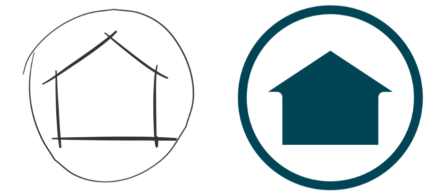
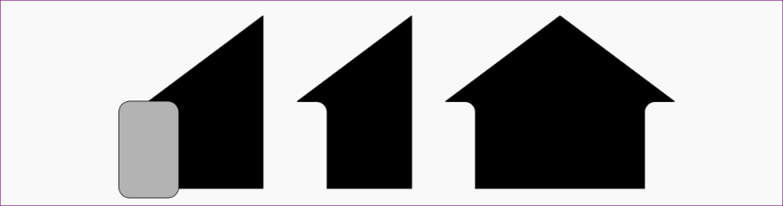

Observe o desenho abaixo:
O que temos na figura é um ícone que pode ser utilizado como um botão de página inicial ou até mesmo compor a logomarca de uma construtora. Para fazer esse desenho siga o tutorial abaixo:
1. Abra o Inkscape e salve o documento em sua pasta com o nome Ícone.svg.
2. Desenhe uma elipse de 120mm por 120mm.
3. Aplique uma cor de contorno e retire o preenchimento.
4. Aplique uma espessura de contorno de 6mm.
5. Clique no menu Caminho → Converter em Caminho.
6. Clique no menu Caminho → Converter Contorno em Caminhos.
7. Ou utilize os atalhos Ctrl+Shift+C e Ctrl+Alt+C.
8. Desenhe um retângulo com 40 de largura por 60 de altura.
9. Defina uma cor de preenchimento e retire o contorno.
10. Converte esse retângulo em caminho (Ctrl+Shift+C).
11. Com a ferramenta Editor de Nós, desça um dos nós superiores até o meio do retângulo.
Se tiver dificuldade, veja abaixo o passo a passo:
12. Utilize um segundo retângulo com os cantos arredondados para aparar (subtrair) o retângulo.
13. Duplique e espelhe, em seguida usando os snaps encaixe um no outro.
14. Una os dois objetos (Ctrl+).
15. Centralize dentro do círculo, se necessário alinhe.
Lembrando: o comando para duplicar é Ctrl+D, o comando para espelhar horizontalmente é H e as opções de alinhamento encontram-se na janela de encaixe Alinhar e Distribuir.